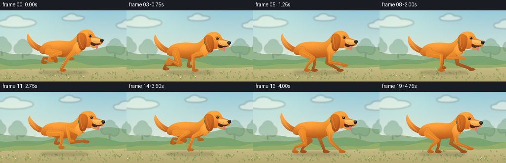
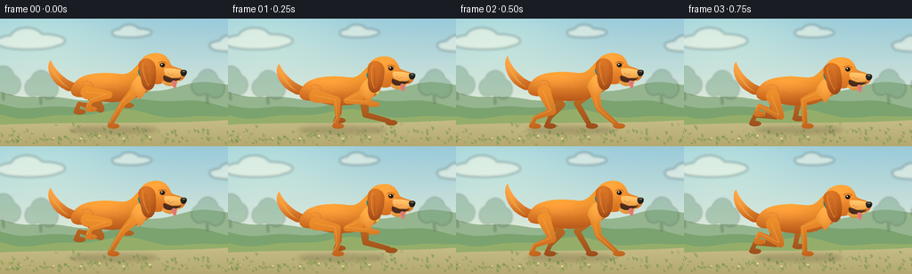

CODING AGENTS AS PIXEL WORLD MODELS
traex/GPT-6.1-Sol · instance_preservation_0000
点击播放 · 原生 RGB 像素
逐轮保存的候选
回放视频、检查图与代码变化。
每份候选均可单独播放。实际图片检查记录在下方工具轨迹中。
候选 01播放与检查图
点击播放 · 原生 RGB 像素


展开代码变化
--- 上一保存版本
+++ 本次保存版本
@@ -0,0 +1,233 @@
+from pathlib import Path
+import math
+import json
+import numpy as np
+from PIL import Image, ImageDraw, ImageFilter
+import artifact_io
+
+ROOT = Path(__file__).resolve().parent
+SPEC = json.loads((ROOT/'task_spec.json').read_text())
+W,H = SPEC['width'],SPEC['height']
+S=4
+SW,SH=W*S,H*S
+rng=np.random.default_rng(2026)
+YY,XX=np.mgrid[0:SH,0:SW].astype(float)/S
+
+# All geometry and lighting are drawn locally, from scratch.
+def bezier(points,n=24):
+ p=np.array(points,float)
+ t=np.linspace(0,1,n)[:,None]
+ return ((1-t)**3*p[0]+3*(1-t)**2*t*p[1]+3*(1-t)*t*t*p[2]+t**3*p[3]).tolist()
+
+def path(start,segments):
+ out=[start]; cur=start
+ for a,b,c in segments:
+ out.extend(bezier([cur,a,b,c])[1:]);cur=c
+ return out
+
+def coords(points): return [(int(x*S),int(y*S)) for x,y in points]
+def poly(im,pts,fill): ImageDraw.Draw(im).polygon(coords(pts),fill=fill)
+def line(im,pts,fill,width=1): ImageDraw.Draw(im).line(coords(pts),fill=fill,width=max(1,int(width*S)),joint='curve')
+def ellipse(im,b,fill): ImageDraw.Draw(im).ellipse(tuple(int(v*S) for v in b),fill=fill)
+def tr(pts,x,y,angle=0):
+ c,s=math.cos(angle),math.sin(angle)
+ return [(x+a*c-b*s,y+a*s+b*c) for a,b in pts]
+
+def painted(im,points,top=(248,159,54),bottom=(180,80,24),yr=(52,100),highlight=None):
+ mask=Image.new('L',(SW,SH));poly(mask,points,255)
+ mix=np.clip((YY-yr[0])/(yr[1]-yr[0]),0,1)
+ arr=np.array(top)[None,None,:]*(1-mix[:,:,None])+np.array(bottom)[None,None,:]*mix[:,:,None]
+ if highlight:
+ x,y,rx,ry,amt=highlight
+ glow=np.exp(-((XX-x)/rx)**2-((YY-y)/ry)**2)*amt
+ arr=arr+glow[:,:,None]*np.array([1,.88,.64])[None,None,:]
+ arr=np.clip(arr,0,255).astype(np.uint8)
+ im.paste(Image.fromarray(arr),(0,0),mask)
+ return mask
+
+# World-fixed plants and clouds move past the tracking camera at different depths.
+grasses=[(rng.uniform(-40,600),rng.uniform(120,143),rng.uniform(1.2,4.8),rng.integers(0,3)) for _ in range(430)]
+flowers=[(rng.uniform(-30,600),rng.uniform(124,143),rng.uniform(.5,1.1)) for _ in range(42)]
+clouds=[(30,24,1.05),(145,15,.62),(260,29,.8),(371,21,1.1)]
+
+def background(t):
+ arr=np.zeros((SH,SW,3),dtype=np.float32)
+ sky0=np.array([153,202,218]);sky1=np.array([223,235,217])
+ g=np.clip(YY/100,0,1)
+ arr=sky0*(1-g[:,:,None])+sky1*g[:,:,None]
+ glow=np.exp(-((XX-43)/92)**2-((YY-9)/51)**2)
+ arr+=glow[:,:,None]*np.array([20,16,4])
+ im=Image.fromarray(np.uint8(np.clip(arr,0,255)))
+ haze=Image.new('RGBA',(SW,SH))
+ for x,y,k in clouds:
+ x=(x-t*2.1+45)%420-45
+ for dx,dy,rx,ry in [(-14,1,17,6),(0,-3,17,10),(18,1,23,7),(2,5,31,5)]:
+ ellipse(haze,(x+(dx-rx)*k,y+(dy-ry)*k,x+(dx+rx)*k,y+(dy+ry)*k),(255,252,233,120))
+ haze=haze.filter(ImageFilter.GaussianBlur(1.5*S));im=Image.alpha_composite(im.convert('RGBA'),haze).convert('RGB')
+ # Gently overlapping meadow ridges.
+ for offset,col,amp,period,vel in [(82,(149,181,143),9,52,3),(96,(123,163,111),5,37,6),(108,(148,174,105),4,28,10)]:
+ pts=[(-2,H+1)]+[(x,offset+amp*math.sin((x+t*vel)/period)+2*math.sin((x+t*vel)/13)) for x in np.arange(-2,260,2)]+[(258,H+1)]
+ poly(im,pts,col)
+ # Soft-edged tree crowns sit far behind the subject.
+ trees=Image.new('RGBA',(SW,SH))
+ for base in [-35,4,46,233,276,332]:
+ x=(base-t*4+55)%380-55
+ y=84+3*math.sin(base)
+ line(trees,[(x,y+10),(x-1,y-8)],(106,142,109,110),2)
+ for dx,dy,rx,ry in [(0,-14,12,14),(-9,-9,9,10),(9,-7,10,11)]:
+ ellipse(trees,(x+dx-rx,y+dy-ry,x+dx+rx,y+dy+ry),(113,157,124,110))
+ trees=trees.filter(ImageFilter.GaussianBlur(1.0*S));im=Image.alpha_composite(im.convert('RGBA'),trees).convert('RGB')
+ # A warm path and fine meadow texture ground the animal.
+ pts=path((-5,120),[((59,116),(178,120),(263,114)),((268,124),(270,143),(263,149)),((170,151),(50,150),(-5,147)),((-7,139),(-7,129),(-5,120))])
+ painted(im,pts,(196,186,132),(180,168,112),(117,144))
+ for x,y,sz,k in grasses:
+ x=(x-39*t+45)%630-45
+ if -3<x<259:
+ col=[(113,145,73),(128,152,77),(156,167,94)][k]
+ # Larger individual blades at the foreground; sparse tiny tufts on the path.
+ if y<128 and int(x+y)%4: continue
+ line(im,[(x-1,y),(x-1.7,y-sz),(x,y-1)],col,.55)
+ line(im,[(x,y),(x+.7,y-sz*.8)],col,.5)
+ for x,y,r in flowers:
+ x=(x-39*t+45)%630-45
+ if 0<x<256 and y>134:
+ line(im,[(x,y),(x+.3,y-2.8)],(110,140,66),.5)
+ ellipse(im,(x-r,y-3-r,x+r,y-3+r),(238,223,142))
+ return im
+
+body_outline=path((-43,-5),[((-36,-17),(-13,-19),(10,-16)),((22,-15),(26,-26),(33,-30)),((42,-32),(46,-25),(45,-15)),((47,-6),(45,2),(36,6)),((29,10),(19,15),(8,15)),((-11,18),(-27,10),(-36,10)),((-47,10),(-49,2),(-43,-5))])
+head_outline=path((-17,-8),[((-15,-17),(-6,-21),(4,-20)),((13,-19),(16,-12),(18,-7)),((21,-4),(30,-3),(33,0)),((37,3),(33,10),(28,11)),((23,12),(17,10),(13,11)),((9,15),(-1,17),(-8,12)),((-15,7),(-20,0),(-17,-8))])
+ear_outline=path((-8,-13),[((-1,-16),(7,-10),(6,-2)),((6,9),(2,22),(-5,22)),((-11,22),(-13,13),(-12,4)),((-13,-5),(-14,-10),(-8,-13))])
+fur_rng=np.random.default_rng(43)
+body_fur=[(float(fur_rng.uniform(-41,34)),float(fur_rng.uniform(-14,14)),float(fur_rng.uniform(1,3.2)),float(fur_rng.uniform(-.4,.4))) for _ in range(210)]
+
+# Rounded tapered limbs, with explicit joints and toes rather than rigid sticks.
+def tube_mask(points,widths):
+ m=Image.new('L',(SW,SH))
+ for p,q,a,b in zip(points[:-1],points[1:],widths[:-1],widths[1:]):
+ vx,vy=q[0]-p[0],q[1]-p[1];length=math.hypot(vx,vy)
+ nx,ny=-vy/length,vx/length
+ poly(m,[(p[0]+nx*a,p[1]+ny*a),(q[0]+nx*b,q[1]+ny*b),(q[0]-nx*b,q[1]-ny*b),(p[0]-nx*a,p[1]-ny*a)],255)
+ for (x,y),r in zip(points,widths): ellipse(m,(x-r,y-r,x+r,y+r),255)
+ return m
+
+def leg(im,root,phase,hind,far,bob):
+ rx,ry=root
+ fx=rx- (24 if hind else 29)*math.cos(phase)
+ fy=123-max(0,math.sin(phase))*(19 if hind else 25)
+ wrist=(fx-1,fy-4)
+ dx,dy=wrist[0]-rx,wrist[1]-ry
+ dist=max(1,math.hypot(dx,dy));L1=24 if hind else 23;L2=27
+ dist=min(dist,L1+L2-.2)
+ aa=(L1*L1-L2*L2+dist*dist)/(2*dist)
+ hh=math.sqrt(max(.1,L1*L1-aa*aa))
+ ux,uy=dx/math.hypot(dx,dy),dy/math.hypot(dx,dy)
+ direction=1 if hind else -1
+ joint=(rx+aa*ux+direction*hh*uy,ry+aa*uy-direction*hh*ux)
+ if hind:
+ points=[root,joint,(wrist[0]+3,wrist[1]-7),wrist]
+ widths=[7.5,4.2,2.3,2.5]
+ else:
+ points=[root,joint,wrist];widths=[6.0,3.4,2.6]
+ m=tube_mask(points,widths)
+ ellipse(m,(fx-4.5,fy-5,fx+9,fy+1),255)
+ top=(200,113,35) if far else (241,145,44)
+ bot=(153,77,27) if far else (192,99,30)
+ mix=np.clip((YY-80)/46,0,1)
+ ar=np.array(top)*(1-mix[:,:,None])+np.array(bot)*mix[:,:,None]
+ im.paste(Image.fromarray(ar.astype('uint8')),(0,0),m)
+ if not far:
+ shine=Image.new('RGBA',(SW,SH))
+ line(shine,[(x-1.5,y-1) for x,y in points],(255,189,86,95),1.2)
+ shine.putalpha(Image.fromarray(np.minimum(np.array(shine.getchannel('A')),np.array(m))))
+ im.paste(shine,(0,0),shine)
+ for d in [3,6]:
+ line(im,[(fx+d,fy-1.7),(fx+d+.7,fy+.15)],(152,78,25),.45)
+ return fx,fy
+
+def dog(im,t):
+ phase=2*math.pi*1.15*t
+ # The tracking camera keeps one animal prominent throughout the shot.
+ cx=126+3.0*math.sin(t*.7)
+ bob=-2.7*math.sin(2*phase+.6)
+ cy=80+bob
+ # Broad diffused contact shadow modulates during each aerial phase.
+ sh=Image.new('RGBA',(SW,SH))
+ ellipse(sh,(cx-48,122,cx+51,129),(68,66,38,70))
+ ellipse(sh,(cx-31,123,cx+35,127),(73,67,34,50))
+ sh=sh.filter(ImageFilter.GaussianBlur(2.4*S));im=Image.alpha_composite(im.convert('RGBA'),sh).convert('RGB')
+ # Feathered, upward-sweeping tail, attached to the same rump in every frame.
+ wag=2.5*math.sin(phase+.6)
+ tail=path((cx-38,cy-5),[((cx-49,cy-6),(cx-64,cy-19),(cx-69,cy-33+wag)),((cx-76,cy-25+wag),(cx-69,cy-6),(cx-54,cy+1)),((cx-47,cy+6),(cx-42,cy+2),(cx-38,cy-5))])
+ painted(im,tail,(244,160,63),(192,94,27),(cy-33,cy+3),highlight=(cx-63,cy-20,15,16,24))
+ for j in range(9):
+ pts=bezier([(cx-48-j*.9,cy-j*.6),(cx-61,cy-6-j),(cx-67,cy-16-j*.6),(cx-69,cy-25+wag+j*.2)],16)
+ line(im,pts,(238,155+j*3,61),.45)
+ # Far limbs appear behind the barrel and are slightly shaded for depth.
+ leg(im,(cx-26,cy+3),phase+1.0,True,True,bob)
+ leg(im,(cx+26,cy+3),phase+math.pi*.38,False,True,bob)
+ body=tr(body_outline,cx,cy)
+ bm=painted(im,body,(243,153,44),(181,83,24),(cy-20,cy+18),highlight=(cx-14,cy-9,38,14,28))
+ # Short fur strokes follow the coat, with a restrained painted texture.
+ texture=Image.new('RGBA',(SW,SH))
+ for x,y,l,a in body_fur:
+ line(texture,[(cx+x,cy+y),(cx+x+l,cy+y+a+l*.16)],(255,211,126,46) if y<0 else (143,68,21,25),.38)
+ texture.putalpha(Image.fromarray(np.minimum(np.array(texture.getchannel('A')),np.array(bm))))
+ im.paste(texture,(0,0),texture)
+ # Gentle haunch and shoulder modelling.
+ line(im,bezier([(cx-34,cy-6),(cx-25,cy-12),(cx-17,cy-3),(cx-24,cy+10)]),(206,112,35),.65)
+ leg(im,(cx-28,cy+5),phase+1.65,True,False,bob)
+ leg(im,(cx+28,cy+1),phase,False,False,bob)
+ # Chest fur overlays the upper foreleg for natural articulation.
+ chest=path((cx+24,cy-8),[((cx+29,cy-16),(cx+38,cy-20),(cx+40,cy-10)),((cx+40,cy),(cx+36,cy+10),(cx+29,cy+13)),((cx+32,cy+8),(cx+25,cy+10),(cx+28,cy+5)),((cx+20,cy+6),(cx+19,cy-2),(cx+24,cy-8))])
+ painted(im,chest,(250,169,64),(216,124,39),(cy-15,cy+15),highlight=(cx+30,cy-3,8,15,18))
+ # A teal collar is stable, identifiable, and contrasts with the orange coat.
+ collar=path((cx+32,cy-22),[((cx+33,cy-17),(cx+38,cy-10),(cx+44,cy-7)),((cx+45,cy-5),(cx+42,cy-2),(cx+40,cy-4)),((cx+34,cy-9),(cx+29,cy-15),(cx+29,cy-20)),((cx+30,cy-22),(cx+31,cy-23),(cx+32,cy-22))])
+ painted(im,collar,(51,136,137),(24,90,97),(cy-22,cy-3))
+ line(im,[(cx+32,cy-20),(cx+35,cy-13),(cx+41,cy-7)],(112,185,171),.7)
+ ellipse(im,(cx+39,cy-2,cx+43,cy+3),(233,192,77))
+ ellipse(im,(cx+40,cy-1.5,cx+41,cy-.5),(255,238,158))
+ # Head stays level and expressive while the torso bounds.
+ hx=cx+48;hy=cy-19-.9*math.sin(phase+.5)
+ hp=tr(head_outline,hx,hy)
+ painted(im,hp,(245,155,50),(214,111,32),(hy-20,hy+14),highlight=(hx-2,hy-11,19,12,24))
+ # Rounded retriever muzzle, with a dark mouth and a small tongue.
+ mouth=path((hx+10,hy+5),[((hx+16,hy+8),(hx+28,hy+6),(hx+30,hy+6)),((hx+27,hy+13),(hx+17,hy+16),(hx+11,hy+11)),((hx+9,hy+9),(hx+9,hy+7),(hx+10,hy+5))])
+ poly(im,mouth,(75,43,28))
+ jaw=path((hx+9,hy+11),[((hx+16,hy+15),(hx+22,hy+12),(hx+27,hy+10)),((hx+24,hy+18),(hx+14,hy+19),(hx+9,hy+14)),((hx+7,hy+13),(hx+8,hy+11),(hx+9,hy+11))])
+ painted(im,jaw,(244,176,80),(221,132,48),(hy+9,hy+19))
+ tongue=path((hx+20,hy+11),[((hx+23,hy+10),(hx+25,hy+12),(hx+24,hy+16)),((hx+24,hy+20),(hx+21,hy+20),(hx+20,hy+17)),((hx+19,hy+15),(hx+18,hy+12),(hx+20,hy+11))])
+ poly(im,tongue,(224,125,116));line(im,[(hx+22,hy+12),(hx+22,hy+16)],(176,85,81),.45)
+ muzzle=path((hx+11,hy-3),[((hx+17,hy-3),(hx+25,hy-3),(hx+31,hy)),((hx+35,hy+2),(hx+32,hy+7),(hx+27,hy+8)),((hx+20,hy+9),(hx+14,hy+7),(hx+12,hy+4)),((hx+10,hy+2),(hx+10,hy-1),(hx+11,hy-3))])
+ painted(im,muzzle,(255,192,105),(236,156,64),(hy-3,hy+9),highlight=(hx+21,hy,13,5,12))
+ # Soft black nose and tiny nostril distinguish the dog from a fox.
+ nose=path((hx+30,hy-1),[((hx+35,hy-2),(hx+37,hy),(hx+35,hy+4)),((hx+33,hy+7),(hx+29,hy+6),(hx+29,hy+3)),((hx+28,hy+1),(hx+29,hy),(hx+30,hy-1))])
+ painted(im,nose,(52,49,42),(30,30,27),(hy-2,hy+6))
+ ellipse(im,(hx+30.5,hy-.1,hx+33.8,hy+1.1),(113,109,90))
+ ellipse(im,(hx+33,hy+2,hx+35,hy+3.7),(21,23,21))
+ line(im,bezier([(hx+12,hy+7),(hx+16,hy+8),(hx+25,hy+9),(hx+30,hy+6)],18),(119,75,34),.55)
+ for dx,dy in [(15,3),(17.5,4.7),(20,3.7)]:ellipse(im,(hx+dx-.35,hy+dy-.3,hx+dx+.35,hy+dy+.3),(164,107,52))
+ # The visible eye includes a warm iris, pupil, brow, and stable catchlight.
+ line(im,bezier([(hx+4,hy-9),(hx+8,hy-12),(hx+12,hy-10),(hx+13,hy-8)],16),(179,91,25),.8)
+ ellipse(im,(hx+5.4,hy-9.1,hx+11.3,hy-4.1),(105,65,26))
+ ellipse(im,(hx+6.3,hy-8.6,hx+10.8,hy-4.3),(46,35,22))
+ ellipse(im,(hx+7.4,hy-8.1,hx+10.1,hy-4.5),(24,26,23))
+ ellipse(im,(hx+7.0,hy-8.1,hx+8.4,hy-6.7),(255,244,207))
+ # Floppy ear with a soft swing; no erect, fox-like pointed ears.
+ ea=-.10+.13*math.sin(phase-.5)
+ ep=tr(ear_outline,hx-5,hy-1,ea)
+ em=painted(im,ep,(211,111,30),(153,66,20),(hy-15,hy+23),highlight=(hx-10,hy+1,8,17,23))
+ line(im,tr(bezier([(-7,-10),(-10,-3),(-8,10),(-5,17)],18),hx-5,hy-1,ea),(240,146,46),.8)
+ for i in range(8):
+ line(im,tr(bezier([(-7+i*.85,-6),(-6+i*.5,0),(-4+i*.25,9),(-5+i*.4,16)],14),hx-5,hy-1,ea),(186+i*3,88+i*3,24),.38)
+ return im
+
+def render(t):
+ im=dog(background(t),t)
+ # Supersampling gives smooth silhouettes and readable facial detail.
+ return np.asarray(im.resize((W,H),Image.Resampling.LANCZOS),dtype=np.uint8)
+
+if __name__=='__main__':
+ frames=np.stack([render(i/SPEC['fps']) for i in range(SPEC['frames'])])
+ artifact_io.save(frames,ROOT)
+ print(f'Saved {len(frames)} RGB frames at {W}x{H}.')
可观测工具轨迹
实际执行的命令与返回图片。
命令 1exit 0
/bin/bash -lc 'ls -la && cat prompt.txt && cat GENERATION_RULES.md && cat task_spec.json'
命令 2exit 0
/bin/bash -lc "cat artifact_io.py && python - <<'PY' import PIL, numpy print(PIL.__version__, numpy.__version__) PY"
命令 3exit 0
/bin/bash -lc "cat > generate.py <<'PY'
from pathlib import Path
import math
import json
import numpy as np
from PIL import Image, ImageDraw, ImageFilter
import artifact_io
ROOT = Path(__file__).resolve().parent
SPEC = json.loads((ROOT/'task_spec.json').read_text())
W,H = SPEC['width'],SPEC['height']
S=4
SW,SH=W*S,H*S
rng=np.random.default_rng(2026)
YY,XX=np.mgrid[0:SH,0:SW].astype(float)/S
# All geometry and lighting are drawn locally, from scratch.
def bezier(points,n=24):
p=np.array(points,float)
t=np.linspace(0,1,n)[:,None]
return ((1-t)**3*p[0]+3*(1-t)**2*t*p[1]+3*(1-t)*t*t*p[2]+t**3*p[3]).tolist()
def path(start,segments):
out=[start]; cur=start
for a,b,c in segments:
out.extend(bezier([cur,a,b,c])[1:]);cur=c
return out
def coords(points): return [(int(x*S),int(y*S)) for x,y in points]
def poly(im,pts,fill): ImageDraw.Draw(im).polygon(coords(pts),fill=fill)
def line(im,pts,fill,width=1): ImageDraw.Draw(im).line(coords(pts),fill=fill,width=max(1,int(width*S)),joint='curve')
def ellipse(im,b,fill): ImageDraw.Draw(im).ellipse(tuple(int(v*S) for v in b),fill=fill)
def tr(pts,x,y,angle=0):
c,s=math.cos(angle),math.sin(angle)
return [(x+a*c-b*s,y+a*s+b*c) for a,b in pts]
def painted(im,points,top=(248,159,54),bottom=(180,80,24),yr=(52,100),highlight=None):
mask=Image.new('L',(SW,SH));poly(mask,points,255)
mix=np.clip((YY-yr[0])/(yr[1]-yr[0]),0,1)
arr=np.array(top)[None,None,:]*(1-mix[:,:,None])+np.array(bottom)[None,None,:]*mix[:,:,None]
if highlight:
x,y,rx,ry,amt=highlight
glow=np.exp(-((XX-x)/rx)**2-((YY-y)/ry)**2)*amt
arr=arr+glow[:,:,None]*np.array([1,.88,.64])[None,None,:]
arr=np.clip(arr,0,255).astype(np.uint8)
im.paste(Image.fromarray(arr),(0,0),mask)
return mask
# World-fixed plants and clouds move past the tracking camera at different depths.
grasses=[(rng.uniform(-40,600),rng.uniform(120,143),rng.uniform(1.2,4.8),rng.integers(0,3)) for _ in range(430)]
flowers=[(rng.uniform(-30,600),rng.uniform(124,143),rng.uniform(.5,1.1)) for _ in range(42)]
clouds=[(30,24,1.05),(145,15,.62),(260,29,.8),(371,21,1.1)]
def background(t):
arr=np.zeros((SH,SW,3),dtype=np.float32)
sky0=np.array([153,202,218]);sky1=np.array([223,235,217])
g=np.clip(YY/100,0,1)
arr=sky0*(1-g[:,:,None])+sky1*g[:,:,None]
glow=np.exp(-((XX-43)/92)**2-((YY-9)/51)**2)
arr+=glow[:,:,None]*np.array([20,16,4])
im=Image.fromarray(np.uint8(np.clip(arr,0,255)))
haze=Image.new('RGBA',(SW,SH))
for x,y,k in clouds:
x=(x-t*2.1+45)%420-45
for dx,dy,rx,ry in [(-14,1,17,6),(0,-3,17,10),(18,1,23,7),(2,5,31,5)]:
ellipse(haze,(x+(dx-rx)*k,y+(dy-ry)*k,x+(dx+rx)*k,y+(dy+ry)*k),(255,252,233,120))
haze=haze.filter(ImageFilter.GaussianBlur(1.5*S));im=Image.alpha_composite(im.convert('RGBA'),haze).convert('RGB')
# Gently overlapping meadow ridges.
for offset,col,amp,period,vel in [(82,(149,181,143),9,52,3),(96,(123,163,111),5,37,6),(108,(148,174,105),4,28,10)]:
pts=[(-2,H+1)]+[(x,offset+amp*math.sin((x+t*vel)/period)+2*math.sin((x+t*vel)/13)) for x in np.arange(-2,260,2)]+[(258,H+1)]
poly(im,pts,col)
# Soft-edged tree crowns sit far behind the subject.
trees=Image.new('RGBA',(SW,SH))
for base in [-35,4,46,233,276,332]:
x=(base-t*4+55)%380-55
y=84+3*math.sin(base)
line(trees,[(x,y+10),(x-1,y-8)],(106,142,109,110),2)
for dx,dy,rx,ry in [(0,-14,12,14),(-9,-9,9,10),(9,-7,10,11)]:
ellipse(trees,(x+dx-rx,y+dy-ry,x+dx+rx,y+dy+ry),(113,157,124,110))
trees=trees.filter(ImageFilter.GaussianBlur(1.0*S));im=Image.alpha_composite(im.convert('RGBA'),trees).convert('RGB')
# A warm path and fine meadow texture ground the animal.
pts=path((-5,120),[((59,116),(178,120),(263,114)),((268,124),(270,143),(263,149)),((170,151),(50,150),(-5,147)),((-7,139),(-7,129),(-5,120))])
painted(im,pts,(196,186,132),(180,168,112),(117,144))
for x,y,sz,k in grasses:
x=(x-39*t+45)%630-45
if -3<x<259:
col=[(113,145,73),(128,152,77),(156,167,94)][k]
# Larger individual blades at the foreground; sparse tiny tufts on the path.
if y<128 and int(x+y)%4: continue
line(im,[(x-1,y),(x-1.7,y-sz),(x,y-1)],col,.55)
line(im,[(x,y),(x+.7,y-sz*.8)],col,.5)
for x,y,r in flowers:
x=(x-39*t+45)%630-45
if 0<x<256 and y>134:
line(im,[(x,y),(x+.3,y-2.8)],(110,140,66),.5)
ellipse(im,(x-r,y-3-r,x+r,y-3+r),(238,223,142))
return im
body_outline=path((-43,-5),[((-36,-17),(-13,-19),(10,-16)),((22,-15),(26,-26),(33,-30)),((42,-32),(46,-25),(45,-15)),((47,-6),(45,2),(36,6)),((29,10),(19,15),(8,15)),((-11,18),(-27,10),(-36,10)),((-47,10),(-49,2),(-43,-5))])
head_outline=path((-17,-8),[((-15,-17),(-6,-21),(4,-20)),((13,-19),(16,-12),(18,-7)),((21,-4),(30,-3),(33,0)),((37,3),(33,10),(28,11)),((23,12),(17,10),(13,11)),((9,15),(-1,17),(-8,12)),((-15,7),(-20,0),(-17,-8))])
ear_outline=path((-8,-13),[((-1,-16),(7,-10),(6,-2)),((6,9),(2,22),(-5,22)),((-11,22),(-13,13),(-12,4)),((-13,-5),(-14,-10),(-8,-13))])
fur_rng=np.random.default_rng(43)
body_fur=[(float(fur_rng.uniform(-41,34)),float(fur_rng.uniform(-14,14)),float(fur_rng.uniform(1,3.2)),float(fur_rng.uniform(-.4,.4))) for _ in range(210)]
# Rounded tapered limbs, with explicit joints and toes rather than rigid sticks.
def tube_mask(points,widths):
m=Image.new('L',(SW,SH))
for p,q,a,b in zip(points[:-1],points[1:],widths[:-1],widths[1:]):
vx,vy=q[0]-p[0],q[1]-p[1];length=math.hypot(vx,vy)
nx,ny=-vy/length,vx/length
poly(m,[(p[0]+nx*a,p[1]+ny*a),(q[0]+nx*b,q[1]+ny*b),(q[0]-nx*b,q[1]-ny*b),(p[0]-nx*a,p[1]-ny*a)],255)
for (x,y),r in zip(points,widths): ellipse(m,(x-r,y-r,x+r,y+r),255)
return m
def leg(im,root,phase,hind,far,bob):
rx,ry=root
fx=rx- (24 if hind else 29)*math.cos(phase)
fy=123-max(0,math.sin(phase))*(19 if hind else 25)
wrist=(fx-1,fy-4)
dx,dy=wrist[0]-rx,wrist[1]-ry
dist=max(1,math.hypot(dx,dy));L1=24 if hind else 23;L2=27
dist=min(dist,L1+L2-.2)
aa=(L1*L1-L2*L2+dist*dist)/(2*dist)
hh=math.sqrt(max(.1,L1*L1-aa*aa))
ux,uy=dx/math.hypot(dx,dy),dy/math.hypot(dx,dy)
direction=1 if hind else -1
joint=(rx+aa*ux+direction*hh*uy,ry+aa*uy-direction*hh*ux)
if hind:
points=[root,joint,(wrist[0]+3,wrist[1]-7),wrist]
widths=[7.5,4.2,2.3,2.5]
else:
points=[root,joint,wrist];widths=[6.0,3.4,2.6]
m=tube_mask(points,widths)
ellipse(m,(fx-4.5,fy-5,fx+9,fy+1),255)
top=(200,113,35) if far else (241,145,44)
bot=(153,77,27) if far else (192,99,30)
mix=np.clip((YY-80)/46,0,1)
ar=np.array(top)*(1-mix[:,:,None])+np.array(bot)*mix[:,:,None]
im.paste(Image.fromarray(ar.astype('uint8')),(0,0),m)
if not far:
shine=Image.new('RGBA',(SW,SH))
line(shine,[(x-1.5,y-1) for x,y in points],(255,189,86,95),1.2)
shine.putalpha(Image.fromarray(np.minimum(np.array(shine.getchannel('A')),np.array(m))))
im.paste(shine,(0,0),shine)
for d in [3,6]:
line(im,[(fx+d,fy-1.7),(fx+d+.7,fy+.15)],(152,78,25),.45)
return fx,fy
def dog(im,t):
phase=2*math.pi*1.15*t
# The tracking camera keeps one animal prominent throughout the shot.
cx=126+3.0*math.sin(t*.7)
bob=-2.7*math.sin(2*phase+.6)
cy=80+bob
# Broad diffused contact shadow modulates during each aerial phase.
sh=Image.new('RGBA',(SW,SH))
ellipse(sh,(cx-48,122,cx+51,129),(68,66,38,70))
ellipse(sh,(cx-31,123,cx+35,127),(73,67,34,50))
sh=sh.filter(ImageFilter.GaussianBlur(2.4*S));im=Image.alpha_composite(im.convert('RGBA'),sh).convert('RGB')
# Feathered, upward-sweeping tail, attached to the same rump in every frame.
wag=2.5*math.sin(phase+.6)
tail=path((cx-38,cy-5),[((cx-49,cy-6),(cx-64,cy-19),(cx-69,cy-33+wag)),((cx-76,cy-25+wag),(cx-69,cy-6),(cx-54,cy+1)),((cx-47,cy+6),(cx-42,cy+2),(cx-38,cy-5))])
painted(im,tail,(244,160,63),(192,94,27),(cy-33,cy+3),highlight=(cx-63,cy-20,15,16,24))
for j in range(9):
pts=bezier([(cx-48-j*.9,cy-j*.6),(cx-61,cy-6-j),(cx-67,cy-16-j*.6),(cx-69,cy-25+wag+j*.2)],16)
line(im,pts,(238,155+j*3,61),.45)
# Far limbs appear behind the barrel and are slightly shaded for depth.
leg(im,(cx-26,cy+3),phase+1.0,True,True,bob)
leg(im,(cx+26,cy+3),phase+math.pi*.38,False,True,bob)
body=tr(body_outline,cx,cy)
bm=painted(im,body,(243,153,44),(181,83,24),(cy-20,cy+18),highlight=(cx-14,cy-9,38,14,28))
# Short fur strokes follow the coat, with a restrained painted texture.
texture=Image.new('RGBA',(SW,SH))
for x,y,l,a in body_fur:
line(texture,[(cx+x,cy+y),(cx+x+l,cy+y+a+l*.16)],(255,211,126,46) if y<0 else (143,68,21,25),.38)
texture.putalpha(Image.fromarray(np.minimum(np.array(texture.getchannel('A')),np.array(bm))))
im.paste(texture,(0,0),texture)
# Gentle haunch and shoulder modelling.
line(im,bezier([(cx-34,cy-6),(cx-25,cy-12),(cx-17,cy-3),(cx-24,cy+10)]),(206,112,35),.65)
leg(im,(cx-28,cy+5),phase+1.65,True,False,bob)
leg(im,(cx+28,cy+1),phase,False,False,bob)
# Chest fur overlays the upper foreleg for natural articulation.
chest=path((cx+24,cy-8),[((cx+29,cy-16),(cx+38,cy-20),(cx+40,cy-10)),((cx+40,cy),(cx+36,cy+10),(cx+29,cy+13)),((cx+32,cy+8),(cx+25,cy+10),(cx+28,cy+5)),((cx+20,cy+6),(cx+19,cy-2),(cx+24,cy-8))])
painted(im,chest,(250,169,64),(216,124,39),(cy-15,cy+15),highlight=(cx+30,cy-3,8,15,18))
# A teal collar is stable, identifiable, and contrasts with the orange coat.
collar=path((cx+32,cy-22),[((cx+33,cy-17),(cx+38,cy-10),(cx+44,cy-7)),((cx+45,cy-5),(cx+42,cy-2),(cx+40,cy-4)),((cx+34,cy-9),(cx+29,cy-15),(cx+29,cy-20)),((cx+30,cy-22),(cx+31,cy-23),(cx+32,cy-22))])
painted(im,collar,(51,136,137),(24,90,97),(cy-22,cy-3))
line(im,[(cx+32,cy-20),(cx+35,cy-13),(cx+41,cy-7)],(112,185,171),.7)
ellipse(im,(cx+39,cy-2,cx+43,cy+3),(233,192,77))
ellipse(im,(cx+40,cy-1.5,cx+41,cy-.5),(255,238,158))
# Head stays level and expressive while the torso bounds.
hx=cx+48;hy=cy-19-.9*math.sin(phase+.5)
hp=tr(head_outline,hx,hy)
painted(im,hp,(245,155,50),(214,111,32),(hy-20,hy+14),highlight=(hx-2,hy-11,19,12,24))
# Rounded retriever muzzle, with a dark mouth and a small tongue.
mouth=path((hx+10,hy+5),[((hx+16,hy+8),(hx+28,hy+6),(hx+30,hy+6)),((hx+27,hy+13),(hx+17,hy+16),(hx+11,hy+11)),((hx+9,hy+9),(hx+9,hy+7),(hx+10,hy+5))])
poly(im,mouth,(75,43,28))
jaw=path((hx+9,hy+11),[((hx+16,hy+15),(hx+22,hy+12),(hx+27,hy+10)),((hx+24,hy+18),(hx+14,hy+19),(hx+9,hy+14)),((hx+7,hy+13),(hx+8,hy+11),(hx+9,hy+11))])
painted(im,jaw,(244,176,80),(221,132,48),(hy+9,hy+19))
tongue=path((hx+20,hy+11),[((hx+23,hy+10),(hx+25,hy+12),(hx+24,hy+16)),((hx+24,hy+20),(hx+21,hy+20),(hx+20,hy+17)),((hx+19,hy+15),(hx+18,hy+12),(hx+20,hy+11))])
poly(im,tongue,(224,125,116));line(im,[(hx+22,hy+12),(hx+22,hy+16)],(176,85,81),.45)
muzzle=path((hx+11,hy-3),[((hx+17,hy-3),(hx+25,hy-3),(hx+31,hy)),((hx+35,hy+2),(hx+32,hy+7),(hx+27,hy+8)),((hx+20,hy+9),(hx+14,hy+7),(hx+12,hy+4)),((hx+10,hy+2),(hx+10,hy-1),(hx+11,hy-3))])
painted(im,muzzle,(255,192,105),(236,156,64),(hy-3,hy+9),highlight=(hx+21,hy,13,5,12))
# Soft black nose and tiny nostril distinguish the dog from a fox.
nose=path((hx+30,hy-1),[((hx+35,hy-2),(hx+37,hy),(hx+35,hy+4)),((hx+33,hy+7),(hx+29,hy+6),(hx+29,hy+3)),((hx+28,hy+1),(hx+29,hy),(hx+30,hy-1))])
painted(im,nose,(52,49,42),(30,30,27),(hy-2,hy+6))
ellipse(im,(hx+30.5,hy-.1,hx+33.8,hy+1.1),(113,109,90))
ellipse(im,(hx+33,hy+2,hx+35,hy+3.7),(21,23,21))
line(im,bezier([(hx+12,hy+7),(hx+16,hy+8),(hx+25,hy+9),(hx+30,hy+6)],18),(119,75,34),.55)
for dx,dy in [(15,3),(17.5,4.7),(20,3.7)]:ellipse(im,(hx+dx-.35,hy+dy-.3,hx+dx+.35,hy+dy+.3),(164,107,52))
# The visible eye includes a warm iris, pupil, brow, and stable catchlight.
line(im,bezier([(hx+4,hy-9),(hx+8,hy-12),(hx+12,hy-10),(hx+13,hy-8)],16),(179,91,25),.8)
ellipse(im,(hx+5.4,hy-9.1,hx+11.3,hy-4.1),(105,65,26))
ellipse(im,(hx+6.3,hy-8.6,hx+10.8,hy-4.3),(46,35,22))
ellipse(im,(hx+7.4,hy-8.1,hx+10.1,hy-4.5),(24,26,23))
ellipse(im,(hx+7.0,hy-8.1,hx+8.4,hy-6.7),(255,244,207))
# Floppy ear with a soft swing; no erect, fox-like pointed ears.
ea=-.10+.13*math.sin(phase-.5)
ep=tr(ear_outline,hx-5,hy-1,ea)
em=painted(im,ep,(211,111,30),(153,66,20),(hy-15,hy+23),highlight=(hx-10,hy+1,8,17,23))
line(im,tr(bezier([(-7,-10),(-10,-3),(-8,10),(-5,17)],18),hx-5,hy-1,ea),(240,146,46),.8)
for i in range(8):
line(im,tr(bezier([(-7+i*.85,-6),(-6+i*.5,0),(-4+i*.25,9),(-5+i*.4,16)],14),hx-5,hy-1,ea),(186+i*3,88+i*3,24),.38)
return im
def render(t):
im=dog(background(t),t)
# Supersampling gives smooth silhouettes and readable facial detail.
return np.asarray(im.resize((W,H),Image.Resampling.LANCZOS),dtype=np.uint8)
if __name__=='__main__':
frames=np.stack([render(i/SPEC['fps']) for i in range(SPEC['frames'])])
artifact_io.save(frames,ROOT)
print(f'Saved {len(frames)} RGB frames at {W}x{H}.')
PY
python generate.py"命令 4exit 2
/bin/bash -lc "python - <<'PY'
from pathlib import Path
import numpy as np
from PIL import Image
root=Path('.')
z=np.load(root/'pixels.npz')['pixels']
assert z.shape==(144,256,20)
for i in range(20):
im=Image.open(root/'frames'/f'{i:02d}.png')
assert im.mode=='RGB' and im.size==(256,144)
print('Verified: 20 RGB frames, 256x144; pixels.npz and index.html exist.')
print('Mean consecutive pixel difference:', np.mean(np.abs(np.asarray(Image.open('frames/01.png')).astype(float)-np.asarray(Image.open('frames/00.png')).astype(float))))
PY
if command -v ffmpeg >/dev/null 2>&1; then ffmpeg -hide_banner -loglevel error -y -framerate 4 -i frames/%02d.png -c:v libx264 -pix_fmt yuv420p -r 4 -movflags +faststart video.mp4; fi
ls -lh pixels.npz index.html video.mp4 2>/dev/null"保存候选 1 份；完成命令 4 次；可验证图片返回 0 张。原始 API 响应与完整日志保留在本地。